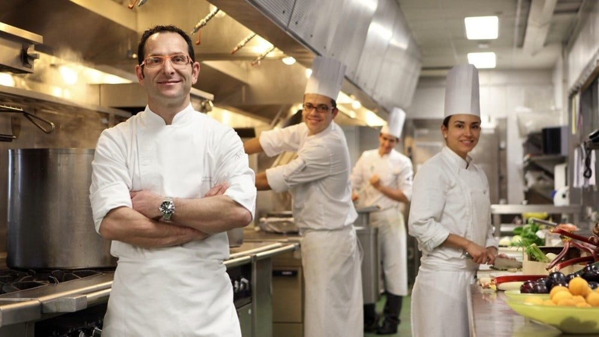

Sobre Nosotros

En Sazón Inka nos apasiona compartir la auténtica gastronomía peruana. Cada plato es preparado con ingredientes frescos, recetas tradicionales y el compromiso de brindar una experiencia inolvidable para nuestros clientes.
Nuestra Misión
Brindar a nuestros clientes platos preparados con ingredientes de calidad, excelente atención y el auténtico sabor de la cocina peruana.
Nuestra Visión
Ser un restaurante reconocido por preservar la tradición gastronómica del Perú, ofreciendo calidad, innovación y un servicio que haga sentir a cada cliente como en casa.